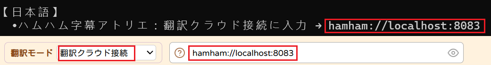

🎙️ Soniox 設定ガイド
音声認識AI「Soniox」の導入手順です。
💡 事前準備：
この機能を利用するには、ローカルサーバー（Backend）の導入が必要です。
まだダウンロードしていない場合は、先に
接続設定ガイド (guide.html)
の「方法B：ローカルAI」からダウンロードしてください。
🚀 設定の流れ (Backend)
APIキーを取得し、ローカルサーバーの設定ファイル(.env)に追記することで有効化されます。
1
アカウント作成とAPIキー取得
Soniox の公式サイト（コンソール）にアクセスし、Googleアカウント等でサインアップします。
ダッシュボードから API Key を発行してください。
⚠️ 注意：
発行されたキーは一度しか表示されない場合があります。必ずコピーして安全な場所に控えてください。
また、本格利用には課金プランへの登録（従量課金）が必要です。
https://console.soniox.com/
📋 URLをコピー
2
バックエンド設定ファイルの編集
ダウンロードしたローカルサーバー（AI Translator Proxy）のフォルダにある
.env
ファイルをメモ帳で開きます。
一番下の行に、以下の形式でAPIキーを追記して保存してください。
# 既存の設定の下に追加してください
SONIOX_KEY
=
ここにコピーしたキーを貼り付け
3
サーバーの再起動
設定を反映させるため、起動中の黒い画面（startapi.bat）を一度閉じて、
もう一度 startapi.bat を実行
してください。
Soniox モードが有効になった状態でサーバーが起動します。
4
字幕ツールへの接続
サーバー（黒い画面）に表示された接続用URL（例:
password://localhost:8083
）をコピーします。
字幕ツールの
「翻訳クラウド接続」
欄にペーストしてください。
最後に、オプション設定で「Soniox API」を
「有効 (Enable)」
にすれば完了です。

× 閉じる